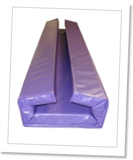

|
| Contact us about your next project kaiser@kaisermfginc.com 651.458.8880 |
Photo Notes: a montage of finished products (this
one borrowed from another site)
Contract Sewing
KAISER Manufacturing is well prepared to serve your needs. We've been sewing commercial/industrial products for over a half century, serving over 20 industries, and working with hundreds of different fabrics and components.
Our focus is on industrial sewing, undertaking projects of any scope and size. Here are a few examples of projects we have completed for our customers.
|

Sewing Capabilities
Our talented team of sewers has over __ collective years of experience in the commercial sewing industry. Most are long-term KAISER employees. They take pride in their work and participate actively in the quality control process, from initial pattern cutting to final assembly. Their professional skills span a comprehensive set of construction methods and computerized sewing, including single needle, double needle, safety stitch, lock stitch, automatic meter, automatic multi stitch, hook/loop fastening, programmable tacking, serging, binding and grommeting.

Notes: another montage, if possible
We understand the importance of being flexible to meet your changing manufacturing needs. When sewing volumes are high and/or deadlines tight, we have a cadre of trusted contract workers to supplement the work of our regular team.
Quality Control
Sewing operations are closely supervised for quality control. We inspect all materials and components when they arrive at our facility, match them to product specifications, monitor them during all stages of sewing and assemby and re-check them when the final product is complete.
A Lower-cost Alternative
When is it time to consider manufacturing off-shore? Our answer: as soon as your design is solid, your volumes are high and you have the requisite lead time available. We'll run the numbers and do a cost-benefit anlysis for you.
Working with our partner in _________, China, we handle all aspects of the overseas manufacturing — from placing the order to the transfer of design specifications and patterns, from sourcing materials to transportation, import duty and taxes — while you continue to buy from a U.S. manufacturer.
|
KAISER Manufacturing Inc. 94 21st Street Newport, MN 55055 |
Phone: 651.458.8880 Fax: 651.458.8885 kaiser@kaisermfginc.com |
Quality Textile Products Made in the U.S.A. |